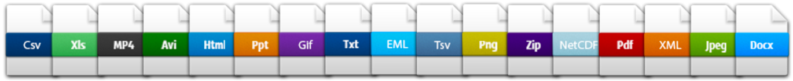
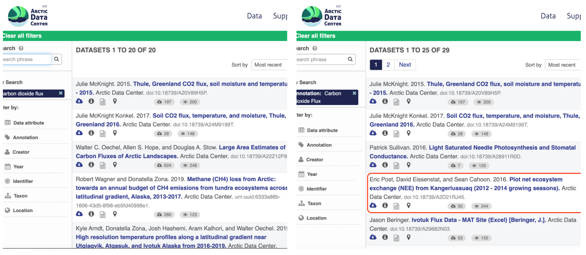
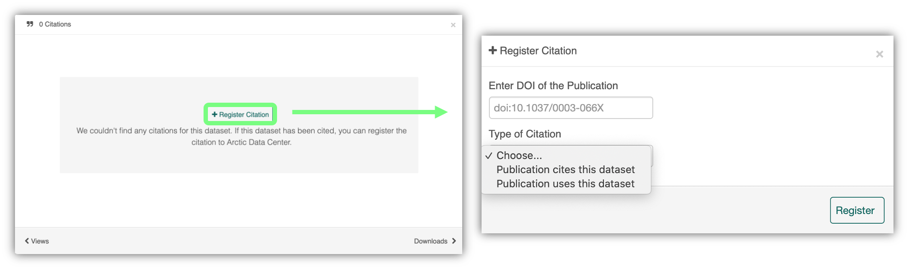

4 Metadata and Data Best Practices
4.1 Best Practices: Data and Metadata
4.1.1 Learning Objectives
In this lesson, you will learn:
- How to achieve practical reproducibility
- Some best practices for data and metadata management
4.1.2 Best Practices: Overview

The data life cycle has 8 stages: Plan, Collect, Assure, Describe, Preserve, Discover, Integrate, and Analyze. In this section we will cover the following best practices that can help across all stages of the data life cycle:
- Organizing Data
- File Formats
- Large Data Packages
- Metadata
- Data Identifiers
- Provenance
- Licensing and Distribution
Our goal, generally, is to operate within this lifecycle in ways that are FAIR
 The FAIR principles are principles that help guide research so that it is more reusable.
The FAIR principles are principles that help guide research so that it is more reusable.
4.1.2.1 Organizing Data
We’ll spend an entire lesson later on that’s dedicated to organizing your data in a tidy and effective manner, but first, let’s focus on the benefits on having “clean” data and complete metadata.
- Decreases errors from redundant updates
- Enforces data integrity
- Helps you and future researchers to handle large, complex datasets
- Enables powerful search filtering
Much has been written on effective data management to enable reuse. The following two papers offer words of wisdom:
- Some simple guidelines for effective data management. Borer et al. 2009. Bulletin of the Ecological Society of America.
- Nine simple ways to make it easier to (re)use your data. White et al. 2013. Ideas in Ecology and Evolution 6.
In brief, some of the best practices to follow are:
- Have scripts for all data manipulation that start with the uncorrected raw data file and clean the data programmatically before analysis.
- Design your tables to add rows, not columns. A column should be only one variable and a row should be only one observation.
- Include header lines in your tables
- Use non-proprietary file formats (ie, open source) with descriptive file names without spaces.
Non-proprietary file formats are essential to ensure that your data can still be machine readable long into the future. Open formats include text files and binary formats such as NetCDF.

Common switches:
- Microsoft Excel (.xlsx) files - export to text (.txt) or comma separated values (.csv)
- GIS files - export to ESRI shapefiles (.shp)
- MATLAB/IDL - export to NetCDF
When you have or are going to generate large data packages (in the terabytes or larger), it’s important to establish a relationship with the data center early on. The data center can help come up with a strategy to tile data structures by subset, such as by spatial region, by temporal window, or by measured variable. They can also help with choosing an efficient tool to store the data (ie NetCDF or HDF), which is a compact data format that helps parallel read and write libraries of data.
4.1.2.2 Metadata Guidelines
Metadata (data about data) is an important part of the data life cycle because it enables data reuse long after the original collection. Imagine that you’re writing your metadata for a typical researcher (who might even be you!) 30+ years from now - what will they need to understand what’s inside your data files?
The goal is to have enough information for the researcher to understand the data, interpret the data, and then re-use the data in another study.
Another way to think about it is to answer the following questions with the documentation:
- What was measured?
- Who measured it?
- When was it measured?
- Where was it measured?
- How was it measured?
- How is the data structured?
- Why was the data collected?
- Who should get credit for this data (researcher AND funding agency)?
- How can this data be reused (licensing)?
Bibliographic Details
The details that will help your data be cited correctly are:
- a global identifier like a digital object identifier (DOI);
- a descriptive title that includes information about the topic, the geographic location, the dates, and if applicable, the scale of the data
- a descriptive abstract that serves as a brief overview off the specific contents and purpose of the data package
- funding information like the award number and the sponsor;
- the people and organizations like the creator of the dataset (ie who should be cited), the person to contact about the dataset (if different than the creator), and the contributors to the dataset
Discovery Details
The details that will help your data be discovered correctly are:
- the geospatial coverage of the data, including the field and laboratory sampling locations, place names and precise coordinates;
- the temporal coverage of the data, including when the measurements were made and what time period (ie the calendar time or the geologic time) the measurements apply to;
- the taxonomic coverage of the data, including what species were measured and what taxonomy standards and procedures were followed; as well as
- any other contextual information as needed.
Interpretation Details
The details that will help your data be interpreted correctly are:
- the collection methods for both field and laboratory data;
- the full experimental and project design as well as how the data in the dataset fits into the overall project;
- the processing methods for both field and laboratory samples IN FULL;
- all sample quality control procedures;
- the provenance information to support your analysis and modelling methods;
- information about the hardware and software used to process your data, including the make, model, and version; and
- the computing quality control procedures like any testing or code review.
Data Structure and Contents
Well constructed metadata also includes information about the data structure and contents. Everything needs a description: the data model, the data objects (like tables, images, matricies, spatial layers, etc), and the variables all need to be described so that there is no room for misinterpretation.
Variable information includes the definition of a variable, a standardized unit of measurement, definitions of any coded values (such as 0 = not collected), and any missing values (such as 999 = NA).
Not only is this information helpful to you and any other researcher in the future using your data, but it is also helpful to search engines. The semantics of your dataset are crucial to ensure your data is both discoverable by others and interoperable (that is, reusable).
For example, if you were to search for the character string carbon dioxide flux in the general search box at the Arctic Data Center, not all relevant results will be shown due to varying vocabulary conventions (ie, CO2 flux instead of carbon dioxide flux) across disciplines — only datasets containing the exact words carbon dioxide flux are returned. With correct semantic annotation of the variables, your dataset that includes information about carbon dioxide flux but that calls it CO2 flux WOULD be included in that search.

Demonstrates a typical search for “carbon dioxide flux”, yielding 20 datasets. (right) Illustrates an annotated search for “carbon dioxide flux”, yielding 29 datasets. Note that if you were to interact with the site and explore the results of the figure on the right, the dataset in red of Figure 3 will not appear in the typical search for “carbon dioxide flux.”
Rights and Attribution
Correctly assigning a way for your datasets to be cited and reused is the last piece of a complete metadata document. This section sets the scientific rights and expectations for the future on your data, like:
- the citation format to be used when giving credit for the data;
- the attribution expectations for the dataset;
- the reuse rights, which describe who may use the data and for what purpose;
- the redistribution rights, which describe who may copy and redistribute the metadata and the data; and
- the legal terms and conditions like how the data are licensed for reuse.
So, how do you organize all this information? There are a number of metadata standards (think, templates) that you could use, including the Ecological Metadata Language (EML), Geospatial Metadata Standards like ISO 19115 and ISO 19139, the Biological Data Profile (BDP), Dublin Core, Darwin Core, PREMIS, the Metadata Encoding and Transmission Standard (METS), and the list goes on and on. The Arctic Data Center runs on EML.
4.1.3 Data Identifiers
Many journals require a DOI - a digital object identifier - be assigned to the published data before the paper can be accepted for publication. The reason for that is so that the data can easily be found and easily linked to.
At the Arctic Data Center, we assign a DOI to each published dataset. But, sometimes datasets need to be updated. Each version of a dataset published with the Arctic Data Center has a unique identifier associated with it. Researchers should cite the exact version of the dataset that they used in their analysis, even if there is a newer version of the dataset available. When there is a newer version available, that will be clearly marked on the original dataset page with a yellow banner indicating as such.

Having the data identified in this manner allows us to accurately track the dataset usage metrics. The Arctic Data Center tracks the number of citations, the number of downloads, and the number of views of each dataset in the catalog.

We filter out most views by internet bots and repeat views within a small time window in order to make these metrics COUNTER compliant. COUNTER is a standard that libraries and repositories use to provide users with consistent, credible, and comparable usage data.

4.1.4 Data Citation
Researchers should get in the habit of citing the data that they use - even if it’s their own data! - in each publication that uses that data. The Arctic Data Center has taken multiple steps towards providing data citation information for all datasets we hold in our catalog, including a feature enabling dataset owners to directly register citations to their datasets.
We recently implemented this “Register Citation” feature to allow researchers to register known citations to their datasets. Researchers may register a citation for any occasions where they know a certain publication uses or refers to a certain dataset, and the citation will be viewable on the dataset profile within 24 hours.
To register a citation, navigate to the dataset using the DOI and click on the citations tab. Once there, this dialog box will pop up and you’ll be able to register the citation with us. Click that button and you’ll see a very simple form asking for the DOI of the paper and if the paper CITES the dataset (that is, the dataset is explicitly identified or linked to somewhere in the text or references) or USES the dataset (that is, uses the dataset but doesn’t formally cite it).

We encourage you to make this part of your workflow, and for you to let your colleagues know about it too!
4.1.5 Provanance & Preserving Computational Workflows

While the Arctic Data Center, Knowledge Network for Biocomplexity, and similar repositories do focus on preserving data, we really set our sights much more broadly on preserving entire computational workflows that are instrumental to advances in science. A computational workflow represents the sequence of computational tasks that are performed from raw data acquisition through data quality control, integration, analysis, modeling, and visualization.

In addition, these workflows are often not executed all at once, but rather are divided into multiple workflows, earch with its own purpose. For example, a data acquistion and cleaning workflow often creates a derived and integrated data product that is then picked up and used by multiple downstream analytical workflows that produce specific scientific findings. These workflows can each be archived as distinct data packages, with the output of the first workflow becoming the input of the second and subsequent workflows.

In an effort to make data more reproducible, datasets also support provenance tracking. With provenance tracking, users of the Arctic Data Center can see exactly what datasets led to what product, using the particular script or workflow that the researcher used.

This is a useful tool to make data more compliant with the FAIR principles. In addition to making data more reproducible, it is also useful for building on the work of others; you can produce similar visualizations for another location, for example, using the same code.
RMarkdown itself can be used as a provenance tool, as well - by starting with the raw data and cleaning it programmatically, rather than manually, you preserve the steps that you went through and your workflow is reproducible.